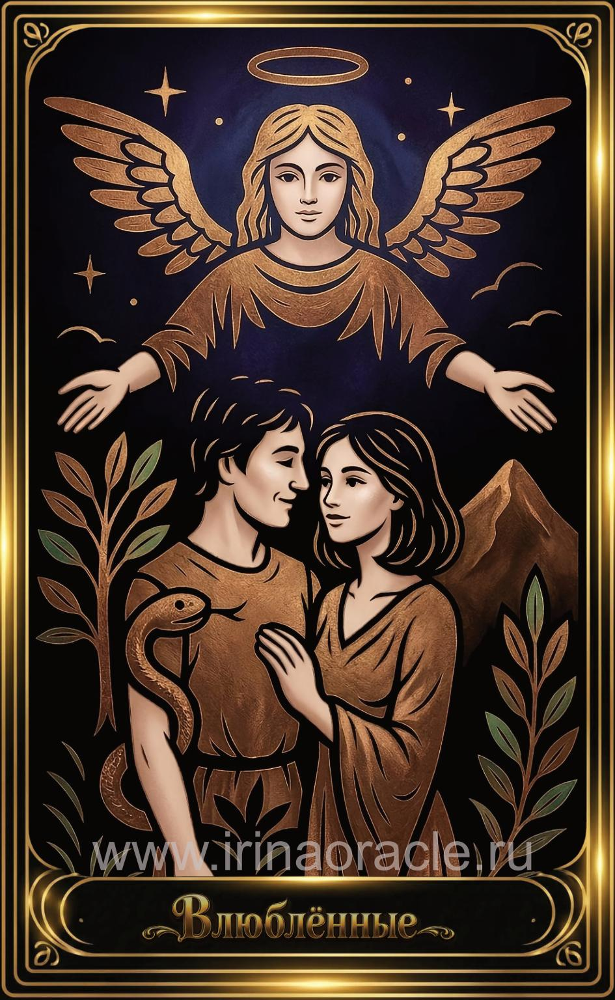

Влюблённые — значение карты Таро
Влюблённые — значение карты Таро

Влюблённые — это карта выбора, любви, гармонии и соединения. Она символизирует важные решения, искренние чувства, союз двух людей или внутреннюю согласованность между разумом и сердцем. Карта появляется тогда, когда человек стоит перед выбором, который определит дальнейший путь.
Общее значение
Влюблённые указывают на необходимость сделать выбор, основанный на ценностях, искренности и внутренней правде. Это карта гармонии, единства и согласия. Она говорит о том, что важно слушать сердце и действовать честно.
Иногда карта указывает на союз, партнёрство или важное решение, которое требует зрелости и ответственности.
Любовь и отношения
В любви Влюблённые — одна из самых благоприятных карт. Она говорит о взаимности, притяжении, искренних чувствах и гармонии. Это отношения, основанные на доверии, честности и глубокой связи.
В тени карта может указывать на любовный треугольник, сложный выбор, сомнения или необходимость определиться с истинными желаниями.
Работа и финансы
В работе Влюблённые указывают на партнёрство, сотрудничество, важные переговоры или выбор направления. Это благоприятное время для объединения усилий и поиска компромиссов.
В финансах карта говорит о необходимости взвешенных решений и внимательного отношения к обязательствам.
Здоровье
Влюблённые указывают на гармонию тела и эмоций, улучшение состояния благодаря поддержке близких или внутреннему равновесию. Иногда карта говорит о необходимости выбора между разными методами лечения.
Важно прислушиваться к себе и избегать крайностей.
Совет карты
Выбирай сердцем. Будь честен с собой. Влюблённые советуют действовать из любви, а не из страха, и принимать решения, которые соответствуют твоим истинным ценностям.
Гармония приходит тогда, когда внутренний выбор совпадает с внешним действием.
Теневая сторона
В тени Влюблённые проявляются как нерешительность, сомнения, зависимость от чужого мнения или страх сделать выбор. Иногда — как соблазн пойти по лёгкому пути.
Карта напоминает: избегание выбора — тоже выбор, но не всегда лучший.